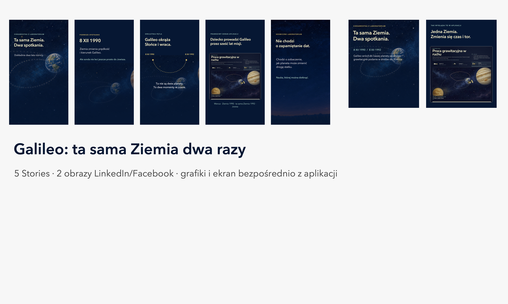
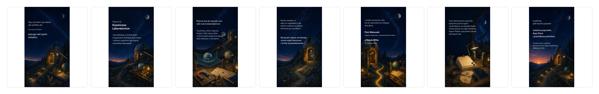

Ta sama Ziemia. Dwa spotkania.
Pięć Stories i dwa obrazy LinkedIn/Facebook o trasie Galileo: pierwszy przelot w 1990 roku, dwuletnia pętla i powrót do tej samej Ziemi w 1992 roku.
Kosmiczne Laboratorium
Gotowe Stories, obrazy do postów, teksty i krótkie materiały wideo. Wszystko pochodzi z malarskiego świata działającej aplikacji.

Pięć Stories i dwa obrazy LinkedIn/Facebook o trasie Galileo: pierwszy przelot w 1990 roku, dwuletnia pętla i powrót do tej samej Ziemi w 1992 roku.

Pierwszy zestaw: siedem Stories, tekst na LinkedIn i pionowy film z prawdziwymi ekranami aplikacji.